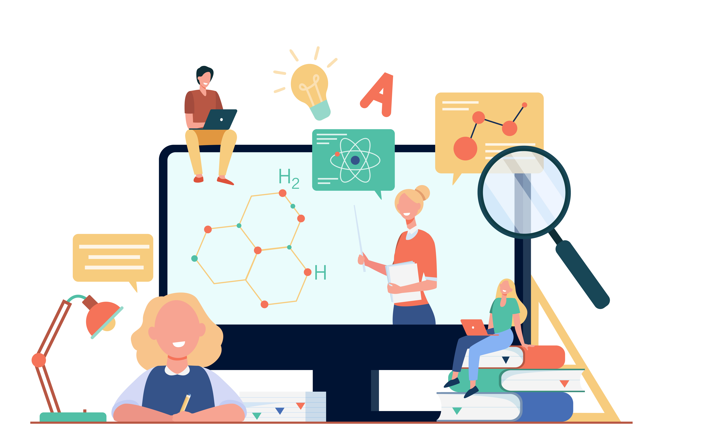

EDUCATIONAL INSTITUTIONS OFFER ACCESS TO TECHNOLOGY
Educational institutions provide digital devices like laptops and tablets to enhance learning, bridging the digital gap and promoting digital literacy.
DeviceDotNow Initiative
Several companies in the UK are donating IT equipment such as laptops, tablets, and mobile SIM cards/dongles to a program called DevicesDotNow. These devices are then given to community online centres through the Online Centres Network, supported by the Good Things Foundation.
Department of Education Support
The Department of Education announced a plan to provide 2,700 digital devices to schools in under-resourced areas. The main objective of this initiative was to ensure that almost 9,000 devices, including laptops and tablets, would be available to Primary Schools, Secondary Schools, Special Schools, and EOTAS centres. This was completed by September of 2023 by The Education Authority.
Investment in Education
The Education Permanent Secretary, Dr Mark Browne, emphasised in October 2023 the importance of access to quality technology for children and young people. He believes that such devices can support learning in the classroom but also at home, particularly for those who need it the most. This significant investment aimed to bridge the digital divide and ensure all students have the tools they need to succeed academically.
AFFORDABLE BROADBAND AND DEVICES
Affordable broadband and devices are low-cost internet and electronic tools accessible to those with limited finances.
Decreasing Digital Exclusion
Based on Ofcom's 2023 Technology Tracker, only 7% of UK households lacked internet access by 2023, compared to 11% in 2020 and 24% in 2011.Digital exclusion varies based on age and socio-economic status, with 18% of households in the socio-economic band DE and people over 65 lacking internet access.
Benefits of Improved Connectivity
The House of Lords Communications and Digital Committee report, focuses on the positive impacts of improved digital connectivity on society. These benefits include increased productivity and job opportunities, the emergence of new business possibilities, tackling digital exclusion and loneliness, addressing educational inequalities and improving efficiency for public services through online access.
Government Initiatives
The UK Government's Project Gigabit, which was funded with 5 billion, is financing the rollout of gigabit broadband in early 2023. This includes obtaining broadband suppliers, vouchers worth up to 4,500 pounds for rural residents, and funding for public sector buildings, such as schools. The government aims to ensure that everyone has access to reliable internet. It has highlighted the need to level up opportunities across the country. As of mid-2023, Project Gigabit was continuously expanding and has received a further 1.4 billion to support the deployment of gigabit-capable broadband in hard-to-reach areas.
Social Tariffs for Low-Income Individuals
Social tariffs offer discounted broadband and mobile services for individuals with low incomes or special needs. Ofcom provides a list of viable social broadband packages costing 12-22 pounds per month, about half the cost of commercial tariffs. Despite these options being available, the uptake of social tariffs remains low. As of February 2023, only 5.1% of households receiving Universal Credit were using social tariffs.
PEER-TO-PEER LEARNING AND COMMUNITY INVOLVEMENT
Peer-to-peer learning involves collaborative teaching and learning among individuals, while community involvement for digital support engages local communities in providing assistance and resources for digital literacy and problem-solving.
Peer-to-peer Learning
Peer-to-peer learning allows students with stronger digital skills to act as mentors to their peers, helping them to develop the skills they need to succeed. By creating a supportive and collaborative environment, peer-to-peer learning can help to break down barriers and provide opportunities for everyone to learn and grow.
Community Involvement
Organising workshops and events that promote digital skills awareness is particularly important for those who may not have access to technology or the internet at home. These events can be held in community spaces such as libraries, community centres, or schools, making them accessible to a wider audience.By providing technology and training, these events can help to bridge the digital divide.
Government Initiatives and Support
The UK Government launched the 'Skills Toolkit', a free online platform to enhance workplace skills. The platform offers a range of digital and numeracy courses for users with limited digital skills who want to improve. These courses are accessible to everyone, regardless of their age, employment status or skill level. The courses cover a variety of topics, ranging from PowerPoint skills to digital marketing and coding, catering to diverse learning needs. The platform promotes peer-to-peer learning and community involvement by encouraging individuals to step out of their comfort zones, learn new skills, and improve their education, contributing to bridging the digital divide through accessible and inclusive learning opportunities.